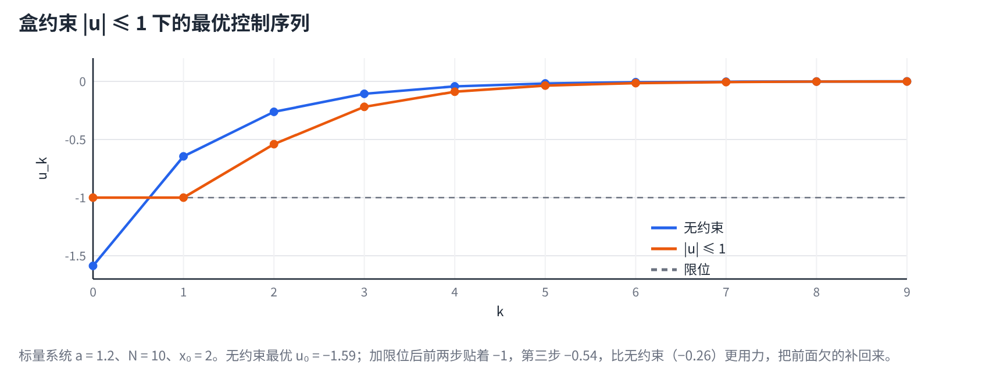
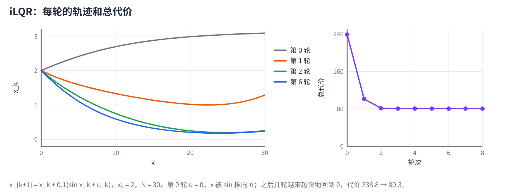
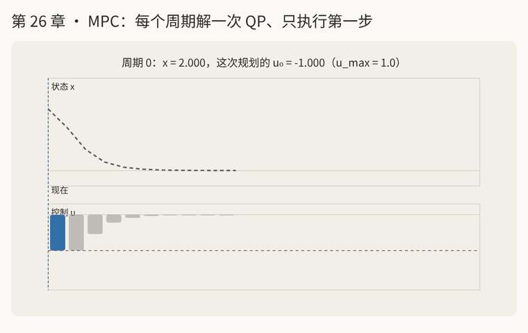

第 26 章 · 轨迹优化与 MPC：写成 QP（稠密 / 稀疏）、iLQR 的回传、MPPI 的路径积分
本地运行
git clone https://github.com/wikieden/math-and-eval-stats
cd math-and-eval-stats/code/notebooks
pip install jupyterlab torch numpy
jupyter lab ch26_trajopt_mpc.ipynb也可以下载后直接用 VS Code 打开 .ipynb 运行。需要 GPU 的章节在 Colab 里选「代码执行程序 → 更改运行时类型 → GPU」。
本章回答：MPC 每个周期解的那个优化问题长什么样？加了力矩限位以后 LQR 为什么不够用？"稠密"和"稀疏"两种写法差在哪？非线性系统怎么办（iLQR）？MPPI 的指数加权是从哪推出来的？
讲解日期：2026-11-25 · 上一章：第 25 章 LQR 与 Riccati · 下一章：第 27 章 扩散模型推导
对应原文：Underactuated Robotics 轨迹优化章robot-motion-rl/materials/text/underactuated-trajopt.txt（直接转录 L18–L19、直接打靶 L24–L25、两者的取舍与带状稀疏 L27–L33、MPC L106–L113、iLQR / DDP L174–L178）；MPPI 论文cs285-deep-rl/materials/text/papers/mppi-1707.02342.txt（自由能下界 L236–L243、最优分布 §A）
本章缩写：MPC = Model Predictive Control（模型 / 预测 / 控制）；QP = Quadratic Programming（二次规划）；iLQR = iterative LQR（迭代线性二次调节器）；DDP = Differential Dynamic Programming（微分动态规划）；MPPI = Model Predictive Path Integral（模型预测路径积分）；N = 预测时域步数；H、f = QP 的二次项矩阵、一次项；λ = MPPI 的温度；ESS = Effective Sample Size（有效样本数）。全部缩写见 附录 · 缩写与术语表
讲解
第一步：稠密 QP（直接打靶）：把状态消掉，只剩控制量（2026-11-25）
类比：只记"每一步踩多少油门"，位置靠回放算出来。
线性系统往前展开（Underactuated L25）：
代进二次代价，得到只含 U 的无约束 QP：
例子（第 25 章的标量系统 a = 1.2、b = 1，Q = R = Q_f = 1，N = 10，x₀ = 2）：解出 u₀ = −1.5871；第 25 章有限时域 Riccati 的 −K₀x₀ = −1.5871，同一个最优解。H 是 10×10 的满矩阵，条件数 204.3。
一句话：无约束时，"把状态消掉解 QP"和"Riccati 往回推"给出同一条最优轨迹；QP 的好处是能加约束。
第二步：加约束：Riccati 写不出来，QP 照样解（2026-11-25）
真实机器人有力矩限位、关节限位、摩擦锥。加上盒约束 |u| ≤ 1：
| u₀ | u₁ | u₂ | |
|---|---|---|---|
| 无约束 | −1.5871 | −0.6451 | −0.2622 |
| u | ≤ 1 | −1.0000 |
前两步顶到限位，后面"补"一点（u₂ 比无约束时用力更大）：约束改变的不只是被截断的那一步。直接把无约束解截断到 ±1 不是最优解。
MPC（Underactuated L106–L113）：每个控制周期用最新测量的 x 解一次这个 QP，只执行 u₀，下个周期再解。时域在往前滚，所以也叫滚动时域控制。

图 26-1 · 蓝：无约束最优 u_k；橙：|u| ≤ 1 时的最优 u_k；虚线是限位。前两步贴着限位，第三步比无约束更用力一句话：MPC = 每个周期解一个带约束的 QP、只执行第一步；约束一加，Riccati 的闭式就没了，但 QP 求解器照样快。
第三步：稀疏 QP（直接转录）：保留状态当变量（2026-11-25）
类比：把每一天的位置也写进计划表，用"相邻两天必须连得上"的约束把它们串起来。
变量多了一倍，但每条约束只碰 3 个变量（Underactuated L19、L33："带状"稀疏，和 Riccati 利用的是同一个结构）。
例子（标量系统，非零元个数）：
| N | 稠密 H | 稀疏 Hessian + 等式约束 |
|---|---|---|
| 10 | 100 | 49 |
| 50 | 2500 | 249 |
| 200 | 40000 | 999 |
稠密按 N² 长，稀疏按 N 长；稠密还要算 A^k（a = 1.2 时 1.2²⁰⁰ ≈ 7 × 10¹⁵，数值很差，原文说的 "tail wagging the dog"，L28）。OSQP、HPIPM 这类求解器专门吃稀疏结构。
场景代码：用 cvxpy 写直接转录（真实库调用；本书环境没装 cvxpy，没跑过）：
import cvxpy as cp
x, u = cp.Variable((N + 1, n)), cp.Variable((N, m))
cons = [x[0] == x0] + [x[k + 1] == A @ x[k] + B @ u[k] for k in range(N)] + [cp.abs(u) <= u_max]
cost = sum(cp.quad_form(x[k], Q) + cp.quad_form(u[k], R) for k in range(N)) + cp.quad_form(x[N], Qf)
cp.Problem(cp.Minimize(cost), cons).solve(solver=cp.OSQP)
u_apply = u.value[0] # MPC 只执行第一步
一句话：直接转录变量多但稀疏、数值好、能并行；直接打靶变量少但稠密、长时域病态。
第四步：iLQR：非线性系统就沿着当前轨迹反复做 LQR（2026-11-25）
类比：开山路，每次只把眼前这一段路近似成直线，规划完开一遍，再按新的路线重新近似。
- 用当前控制序列往前滚，得到名义轨迹；
- 沿轨迹线性化动力学（A_k、B_k）、二次化代价；
- 往回推一个 Riccati 式的递推，得到前馈修正 k_k 和反馈增益 K_k；
- 带线搜索往前滚：\(u_k = \bar u_k + \alpha k_k + K_k(x_k - \bar x_k)\)；代价下降就接受，回到 1。
（Underactuated L174–L178；DDP 再多保留动力学的二阶项）
例子（编的非线性系统 \(x_{k+1} = x_k + 0.1(\sin x_k + u_k)\)，x₀ = 2，N = 30，Q = R = 1）：
| 轮次 | 0（u = 0） | 1 | 2 | 3 | 4 | 6 |
|---|---|---|---|---|---|---|
| 总代价 | 238.78 | 100.95 | 81.28 | 80.38 | 80.32 | 80.32 |
几轮就收敛（局部二次收敛）。iLQR 只保证找到局部最优，而且原生不支持约束（L177），约束一般靠罚函数或改用直接转录。

图 26-2 · 左：第 0、1、2、6 轮的状态轨迹（u = 0 时 x 往上漂；之后越来越快地回到 0）；右：每轮总代价一句话：iLQR = 沿名义轨迹线性化 + 二次化，往回推出修正和反馈，往前滚并线搜索，反复到收敛。
第五步：MPPI：最优控制分布是"先验 × exp(−代价/λ)"（2026-11-25）
类比：派一群人各自随机试一条路线，花费越少的人说话分量越重，最后按分量平均。
MPPI 把问题换成：在所有控制分布 q 里，最小化 E_q[代价] + λ·KL(q ‖ p)（p 是采样用的先验控制分布）。这个问题有闭式解（MPPI 论文 L236–L243 的自由能下界，取等号时）：
采样实现：从 p 抽 K 条控制序列，权重 \(w_i \propto \exp(-S_i/\lambda)\)，新控制 = 加权平均（第 16 章第四步就是这个更新）。
例子（一步问题：p = N(0, 1)，代价 S(u) = (1 + u)²）：q* 还是高斯，精度 1 + 2/λ，均值 −(2/λ)/(1 + 2/λ)：
| λ | 闭式最优均值 | 10 万样本加权估计 | 有效样本数 |
|---|---|---|---|
| 1 | −0.6667 | −0.6660 | 57053 |
| 0.1 | −0.9524 | −0.9525 | 19169 |
λ → 0：只信最好的那条（贪心，有效样本少、噪声大）；λ → ∞：退回先验。
一句话：MPPI 解的是"代价 + λ·KL"的问题，最优分布 ∝ 先验 × e^{−S/λ}，采样加权平均就是它的蒙特卡洛估计。
动画演示：MPC 滚动时域

可交互版：animations/26-trajopt-mpc.html（滑块调控制周期 k 和限位 u_max）。
怎么看：
- 每一帧是一个控制周期：灰色是这次 QP 规划出来的 10 步预测，只有蓝色的第一步真正执行，橙色是已经执行过的历史（第二步）；
- 下一帧从新的状态重新规划，预测窗口往前挪一格；
- 把 u_max 调小：前几步控制量贴着限位，状态回来得更慢（第二步）。
练习与作答记录
题 1（第一步）：标量系统 a = 1、b = 1，N = 2，Q = R = 1，Q_f = 1。写出 S_x、S_u 和 H（2×2）。
作答：（待作答）
题 2（第三步）：状态维数 n、控制维数 m、时域 N，直接打靶有几个决策变量？直接转录有几个变量、几条等式约束？
作答：（待作答）
题 3（第五步）：MPPI 有 4 条候选，代价 [1, 2, 3, 10]，λ = 1。算权重（保留 3 位）。λ 改成 10 呢？
作答：（待作答）
口诀
只记油门是打靶，稠密而病态；连状态一起记是转录，稀疏又稳当；
无约束时 QP 和 Riccati 同解，加了限位只能靠 QP；
MPC 每拍解一次、只走第一步；
非线性就 iLQR：线性化、往回推、往前滚；
MPPI：先验乘 e 的负代价除 λ。
本章复习卡片
ST89（稠密 vs 稀疏 QP、MPC 只执行第一步）、ST90（iLQR 的四步循环）、ST91（MPPI 的最优分布与 λ 的作用）。练习做完后，按答错、卡住的地方补上。
附录 · 延伸阅读
留给以后深入学习用，不影响本章主线。★ 是建议先读的。
推荐阅读
| 读什么 | 读哪里 | 读它为了什么 |
|---|---|---|
| ★ Underactuated Robotics 轨迹优化章 | L18–L33（转录与打靶）、L106–L113（MPC）、L174–L178（iLQR / DDP） | 本章主线的出处 |
| ★ 《机器人运控与强化学习》第 14 章 凸 MPC、第 15 章 iLQR 与 MPPI | 全章 | 四足机器人上的真实用法 |
| MPPI 论文（Williams 2017） | §III（自由能下界）、§A（最优分布） | 指数加权的推导 |
| 第 15 章 约束与凸优化 | 第三、四步 | KKT、QP 标准形 |
| 第 16 章 蒙特卡洛与采样 | 第四步 | CEM 与 MPPI 的采样实现 |
数学原理
- 打靶的展开：\(x_k = A^kx_0 + \sum_{j<k}A^{k-1-j}Bu_j\)，X 对 U 线性，所以代价对 U 是二次的。
- QP 与 Riccati 同解：两者解的是同一个凸问题；Riccati 是利用带状结构的高效消元（等价于对 KKT 矩阵做块三对角分解）。
- MPPI 的变分形式：\(\min_q E_q[S] + \lambda\text{KL}(q\|p)\) 的解 \(q^* \propto pe^{-S/\lambda}\)，最小值 \(= -\lambda\log E_p[e^{-S/\lambda}]\)（自由能）。
- iLQR 的局部收敛：在最优解附近，Gauss-Newton 式的二次近似让收敛很快；离得远时靠线搜索保证下降。
公式清单
| 公式 | 意思 |
|---|---|
| \(X = S_xx_0 + S_uU\) | 打靶展开 |
| \(\min_U U^\top HU + 2x_0f^\top U\) | 稠密 QP |
| \(x_{k+1} = Ax_k + Bu_k\) 作为约束 | 直接转录 |
| \(u_k = \bar u_k + \alpha k_k + K_k(x_k - \bar x_k)\) | iLQR 前向更新 |
| \(q^*(u) \propto p(u)e^{-S(u)/\lambda}\) | MPPI 最优分布 |
代码对照：把本章的数字用代码算一遍
代码在仓库本地
math-and-eval-stats/solutions/chapter-code/ch26_trajopt_mpc.py，配套测试tests/test_ch26.py：
bash cd math-and-eval-stats/solutions/chapter-code uv run python ch26_trajopt_mpc.py uv run pytest tests/test_ch26.py
讲义 ↔ 代码：
| 讲义 | 公式 | 写法 | 跑出来 |
|---|---|---|---|
| 第一步 稠密 QP | H U = −f x₀ | solve_unconstrained() |
u₀ = −1.5871 |
| 第二步 盒约束 | L-BFGS-B | solve_box(1.0) |
[−1, −1, −0.5396] |
| 第三步 稀疏 | 非零元计数 | nnz_counts(50) |
2500 vs 249 |
| 第四步 iLQR | 往回推 + 线搜索 | ilqr() |
238.78 → 80.32 |
| 第五步 MPPI | 指数加权 | mppi_one_step(lam=0.1) |
−0.9525 |
关键几行：
su[k, j] = a ** (k - j) * b # 打靶：u_j 对 x_{k+1} 的影响
qx = 2*q*xs[k] + ak*vx; qu = 2*r*u[k] + bk*vx # iLQR：Q 函数的一阶项
kff[k], kfb[k] = -qu / quu, -qux / quu # 前馈修正、反馈增益
w = np.exp(-(s - s.min()) / lam) # MPPI：先减最小值再取指数（第 22 章）
代码里才看得到的 3 件事：
- 盒约束 QP 用 L-BFGS-B 解：它原生支持变量上下界；真正的 MPC 会用 OSQP 这类专门的 QP 求解器，速度快几个数量级。
- iLQR 的线搜索从 α = 1 往下试：代价没下降就把步长减半，4 次都不行就停（这个例子每轮第一次就成功）。
- MPPI 权重先减最小代价：e^{−S/λ} 在 λ 小时会下溢成 0，减掉 min S 后最好的那条权重是 1，比例不变。
自己改一改（不影响练习答案）：
- 把
solve_box的限位改成 0.5，看前几步贴着限位。 - 把 iLQR 的 x₀ 改成 3（离 sin x 的另一个平衡点 π 很近），看收敛到哪、要几轮。